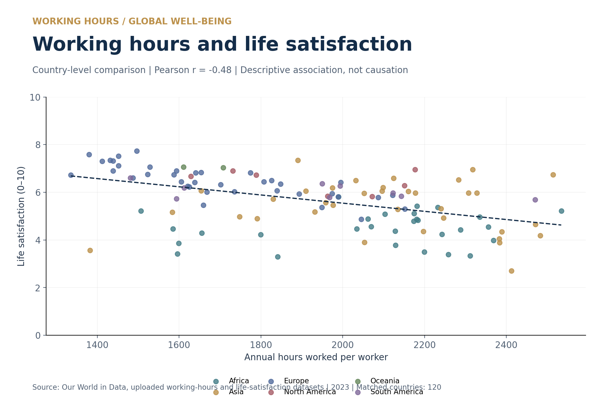

Gold Market Visualization
Evaluating financial information design and improving the clarity of gold price trends through exploratory user feedback.
Explore case study →Financial Markets, Data Science & Technology
I am interested in the decisions behind the numbers — how markets behave, how businesses grow, and how technology can make complex information more useful.
Master's candidate at Carnegie Mellon University · Economics graduate of The Ohio State University.
Explore selected work →Evaluating financial information design and improving the clarity of gold price trends through exploratory user feedback.
Explore case study →
Cross-country analysis of working hours, life satisfaction and regional differences.
Explore analysis →Analyzed customer, sales and market data using SQL and Excel. Delivered recurring performance reports and recommendations supporting retention and regional sales planning.
Organized financial records, supported workflow automation and quality checks, and communicated predictive outputs to business stakeholders.
Monitored market activity, researched companies and industries, and supported financial documentation and coordination for corporate-directed bond issuances.
Heinz College · Master of Information Systems Management
Business analytics, digital transformation, project management and information systems.
B.A. Economics · Minor in History
GPA 3.783/4.0 · History minor GPA 4.0/4.0
ASC Honors Program · Dean's List (5 semesters)